OPTIMIZING / REALITY
I'm
High-Performance Systems Architect & Entrepreneur
Over the past decade, I've built deep expertise in high-performance systems, distributed architecture, and concurrent systems design. With 6+ years of professional experience part of big companies and building startups, I specialize in C++20 concurrency, cross-platform I/O systems, and scalable backend infrastructure for extreme-throughput scenarios (750K–1.2M requests/sec).
My technical toolkit spans low-latency optimization, SIMD vectorization, lock-free data structures, and async I/O abstraction (IOCP, io_uring, kqueue). I've led teams through critical infrastructure migrations, shipped Disaster Recovery engines across 25 global data centers, and authored 4 peer-reviewed IEEE publications on modern C++ patterns and asynchronous systems design.
Beyond engineering, I'm an entrepreneur, researcher, and neuroscience enthusiast dedicated to understanding how complex systems-both computational and biological-operate at peak efficiency. I co-founded Headstarter (connecting 1000+ students with career opportunities) and TechEdu++ (innovative learning platform). I apply evidence-based neuroscience strategies to maintain optimal cognitive performance, which directly informs my systems thinking and architectural philosophy. My work bridges the gap between understanding how brains optimize and how to build systems that operate with similar elegance and efficiency.
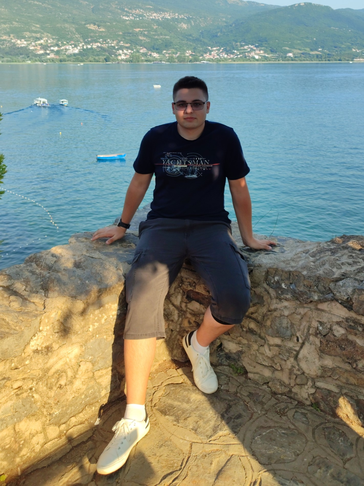
ALEX / TSVETANOV
Software Engineer
High-Performance Systems Engineer specializing in C++20 concurrency and cross-platform I/O systems for Windows, Linux, and macOS. Experienced in distributed system design, low-latency optimization, and production deployment. Recognized for debugging complex concurrency issues, collaborating across teams, and continuously improving performance and scalability.
Entrepreneur
At 16, I began turning my school projects into real-world applications. In 2022, I launched my first startup - Headstarter - aimed at preparing high school students for life beyond school by connecting them with internships and career opportunities.
Neuro-Optimization
I'm deeply invested in understanding how the brain operates and what makes it more efficient. Through studying neuroscience research and evidence-based cognitive strategies, I've been actively optimizing my own neural architecture for peak performance-maintaining 100% cognitive capacity daily. This personal research into neurobiology directly informs my systems thinking and drives my commitment to building high-performance, scalable infrastructure that mirrors the efficiency principles I apply to my own cognition.
THE LAB
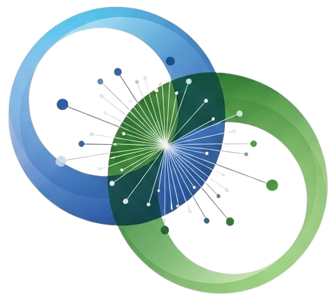
Coroute/WebFrame++
Cross-Platform Web Framework - A high-performance asynchronous server architecture designed for extreme throughput and low-latency scenarios.
- Benchmarked at 750,000 to 1.2 million requests/sec across Windows and Linux (measured with wrk and ab).
- Implemented coroutine-based I/O scheduler and lock-free queues, achieving ~13% throughput improvement.
- Developed modular networking layer abstracting IOCP (Windows), io_uring (Linux), and kqueue (macOS) into unified async API.
- Evaluated coroutine scheduling models and caching strategies to minimize latency jitter.
- Extended framework with HTTP pipelining and asynchronous file streaming for production-grade workloads.
THE STAGE
Education
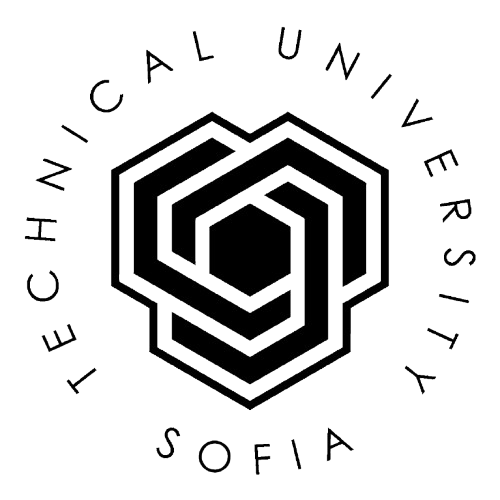
Bachelor of Engineering in Computer and Software Engineering
Technical University of Sofia, Bulgaria - 2023–2026
Core subjects include: Programming (C, Python, Java, C++, C#), Data Structures & Algorithms, Operating Systems, Computer Architecture, Databases (incl. project work), Network Technologies, Mobile Development, Cryptographic Methods, Expert Systems, Logic Design, and High-Performance Computing. Foundation in Mathematics I–III, Physics, and Material Science.
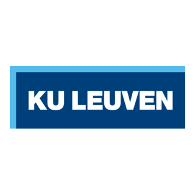
Bachelor of Engineering Technology
Katholieke Universiteit Leuven, Belgium - 2022–2023
Multidisciplinary curriculum covering applied sciences and technical communication: Mathematics, Physics, Graphic Techniques, Management, and Engineering Project Skills. Strong emphasis on group collaboration and lab-based learning.
Bachelor of Industrial Engineering
Technical University of Sofia, Bulgaria - 2021–2022
Focus on Engineering Mathematics, Physics, Mechanics, Materials Science, Electrical Engineering, and Manufacturing Processes. Built foundational understanding of technical systems and analytical modeling.
Secondary Education
Sofia High School of Mathematics, Bulgaria - 2013–2021
Profile: Mathematics and Informatics. Intensive training in advanced mathematics, algorithmic thinking, competitive programming, and applied computer science. Active participation in national and international contests.
Courses & Training
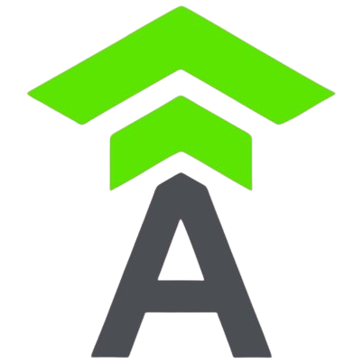
C++ & Algorithms
Telerik Kids Academy - 2014–2018
Hands-on programming fundamentals and problem-solving using C++. Built strong foundations in syntax, logic, and algorithmic thinking from an early age.
Algorithms & Data Structures
Telerik Algo Academy - 2012–2017
Advanced training in algorithmic techniques including recursion, dynamic programming, graphs, and greedy algorithms. Participated in national coding competitions.
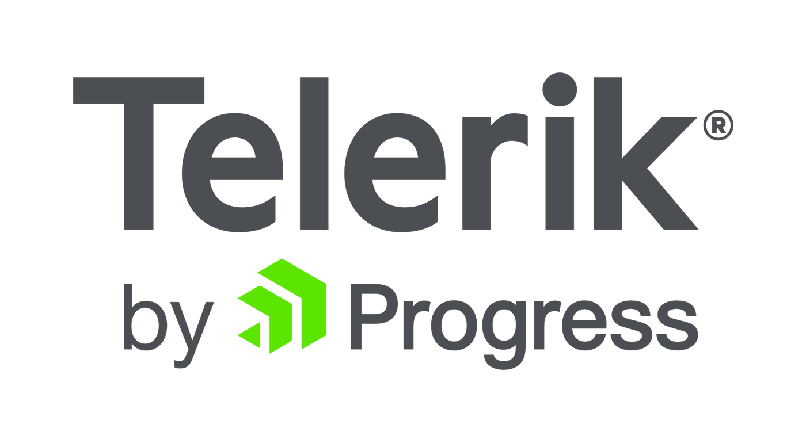
C#.NET
Telerik Software Academy - 2016–2017
Focused on web development with ASP.NET. Covered server-side logic, MVC patterns, and RESTful services with C#.
Web Development
Telerik Software Academy - 2016–2017
Developed full-stack web applications using Node.js, HTML, CSS, and vanilla JavaScript. Emphasized frontend-backend interaction and client-server architecture.
Summer Research School
Bulgarian Academy of Sciences - 2016–2018
Research-focused program led by top scientists in Bulgaria. Participated in cybersecurity, AI, and systems modeling projects under academic mentorship.
Java Web Development
Telerik School Academy - 2017–2018
Built full-stack web apps using Java and the Spring Framework. Focused on MVC architecture, dependency injection, and database connectivity.

SAP Geeky Camp 5.0
SAP - 2018
Selective summer tech camp with intensive focus on algorithms, data structures, and solving real-world software engineering problems in teams.
Extra-curricular Activities
Lightning Talk Speaker at OpenFest
Nov 2025
Delivered a 5-minute lightning talk on leveraging C++20 coroutines (co_await) over unified kernel I/O queues, covering the submit/completion queue model, a coroutine-friendly async I/O API, and a thread-pool executor design - demonstrating how modern C++ enables high-throughput, low-latency I/O with synchronous-style code.
Competitor – Sofia City Team in Algorithmic Programming
2013 - 2021
Competed in national and international algorithmic competitions over 8 years, solving challenging problems within limited time using advanced algorithms, data structures, and analytical thinking. Won numerous awards at both levels, becoming the youngest competitor on record at age 9 and the youngest gold medalist at age 10.
Organizer – Open Doors Day
2018 - 2020
Organized three annual editions of the Open Doors Day event, where 19 alumni shared their career journeys post-graduation. Coordinated all logistics and communication with guest speakers, created the event schedule, and set up the server infrastructure for live streaming and online attendance.
Web Developer
2016 - 2019
Developed the web interface for an experimental platform simulating emotional response theory based on Silvan Tomkins' work. Contributed to the visualization and interaction layer of the research tool used in academic experiments.
Student Mentor
2017 - 2018
Volunteered as a mentor guiding young learners ("Ninjas") through basic programming concepts. Assisted them in building small personal projects, encouraged curiosity, and provided support during hands-on coding sessions.
Awards & Achievements
1st Place among university teams in the cybersecurity hackathon "Big SCHWARZ Interlude"
2025 - Sofia, Bulgaria
Runner-up in President's awards "John Atanasov"
2019 - Sofia, Bulgaria
Top 10 in International Entrepreneurship Competition with the startup "Headstarter"
2019 - Ljubljana, Slovenia
1st Place in National Entrepreneurship Competition with the startup "Headstarter"
2019 - Sofia, Bulgaria
Bronze medal in International Competition in Algorithmic Programming "John Atanasov"
2017 - Shumen, Bulgaria
Professional Experience
Senior C++ Software Engineer
Acronis, Sofia, Bulgaria - July 2025–Present
- Led a team of 4 to design and ship the Disaster Recovery (DR) engine for Cyber Frame and VHI, enabling natively integrated, secure IaaS resilience across 25 global data centers.
- Orchestrated licensing synchronization with Virtuozzo's Key Admin API, aligning complex feature requirements with backend capabilities to ensure predictable, ingress-free infrastructure pricing.
- Engineered high-performance C++ modules for data serialization and integrity, integrating with Golang microservices optimized to handle multi-terabyte Kubernetes clusters per user, meeting core scalability targets for next-generation backup operations.
- Implemented the cyber-pilot SDLC kit to drive AI-adoption within internal projects, streamlining the development lifecycle from business requirement analysis to low-level implementation.
Software Engineer
Chaos Group, Sofia, Bulgaria - July 2023–July 2025
- Achieved 5x viewport speedup by re-engineering point-cloud transformations using xsimd for cross-platform SIMD abstraction (SSE/AVX-512).
- Architected and open-sourced the sketchup-cpp-api library to standardize plugin stability and eliminate cross-process memory corruption.
- Refactored rendering subsystems for thread safety and cache locality, eliminating high-frequency crashes across varied hardware and scene scales.
Software Architect
SCIA, Leuven, Belgium - September 2022–July 2023
- Designed the migration of monolithic Visual C++ logic from legacy COM services to a modern gRPC and Redis-based architecture.
- Modernized the global build system using CMake and vcpkg, unblocking cross-platform development for legacy structural engineering software.
- Directed the evaluation and adoption of gRPC to replace aging internal protocols, ensuring long-term system scalability and interoperability.
C++ Back-end Engineer
PokerStars, Sofia, Bulgaria - June 2022–September 2022
- Developed real-time limit-checking engines for a global platform peaking at 55,000+ concurrent players.
- Implemented backend logic for localized regulatory compliance and addiction prevention across multiple international jurisdictions.
- Engineered high-availability promotional systems with zero-tolerance for database inconsistency or latency in transaction-heavy environments.
Full Stack Engineer
VMware, Sofia, Bulgaria - 2021–2022
- Optimized Solution Builder SQL queries, reducing execution from 30s to 1.5s and resolving systemic deadlocks for thousands of users.
- Delivered Spring Boot/Angular features for enterprise service bundling, managing complex role-pairing and automated quote generation.
- Acted as the primary technical resource for front-end performance and styling, mentoring the team on UI best practices and modular Angular components.
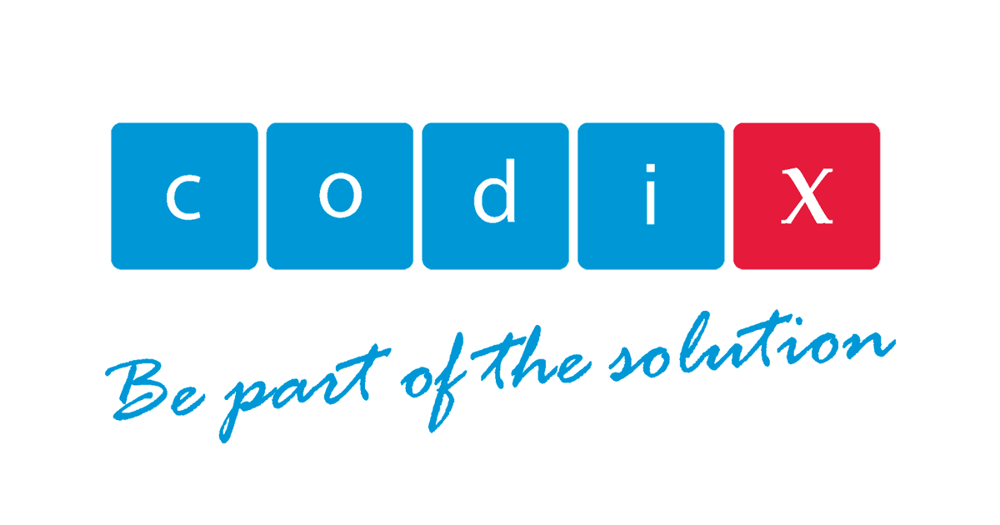
C++ Software Developer
Codix, Sofia, Bulgaria - May 2019–September 2019
- Developed core financial modules including lending, factoring, and debt collection for 9 international Tier-1 banking and financial institutions.
- Maintained and extended high-stakes C++ "night jobs" and background processing services, ensuring data integrity for global financial close cycles.
- Implemented 100+ feature extensions within a shared codebase, balancing client-specific requirements with a unified product architecture.
Technical Trainer
Software University, Sofia, Bulgaria - 2017
- Delivered Python programming lectures to a diverse group of learners, including working professionals retraining for software roles.
- Covered foundational topics such as syntax, control flow, functions, data structures, and OOP principles.
- Led live coding sessions, assigned practical exercises and homework, and evaluated performance through final exams.
- Adapted teaching style to accommodate varying experience levels and professional backgrounds.
Entrepreneurship
Web Developer and Co-founder
Headstarter, Sofia, Bulgaria - 2018–2022
High-school Entrepreneurship Project - An online platform connecting young students with businesses offering internships and career opportunities.
- Developed and maintained the Headstarter web platform for connecting young students with businesses offering internships and jobs.
- Supported the platform goals of guiding students in career paths, networking, and gaining professional experience.
- Organized team workload for efficient operations and service delivery across multiple development cycles.
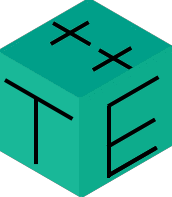
Web developer and Founder
TechEdu++, Sofia, Bulgaria - 2016–2019
Learning Management System for Informatics - An innovative online platform designed to make technical education engaging and accessible for high school students.
- Developed a comprehensive learning management system (LMS) with in-depth Informatics courses tailored for high school students.
- Created short, engaging video lessons covering multiple programming languages and computer science fundamentals.
- Integrated TechEdu++ into the teaching processes at Sofia High School of Mathematics, directly supporting academic curricula.
WHAT OTHERS SAY
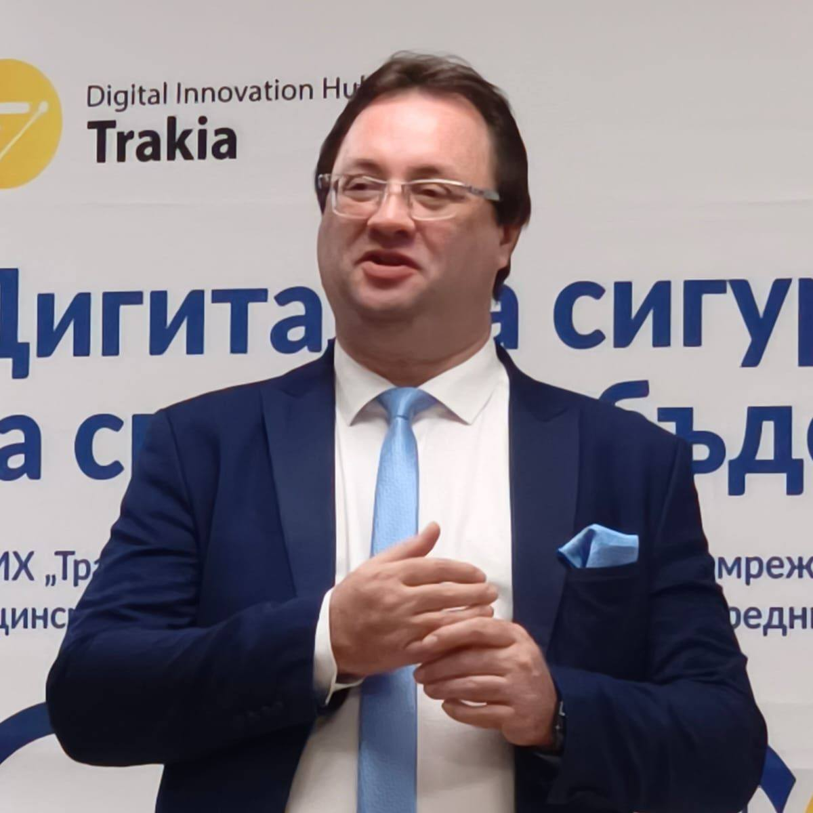
"Alex is a fast-progressing and highly innovative researcher with exceptional capabilities in systems design and optimization."
"He was instrumental in implementing key features and driving significant infrastructure improvements. Any team would be lucky to have him."
"Alex possesses a rare ability to look at a chaotic legacy system and see the underlying blueprint. His architectural thinking and execution are exceptional."
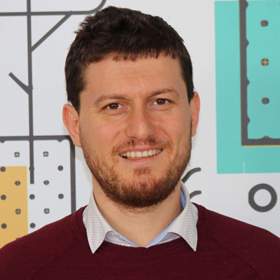
"Alex is a dedicated and strong developer with deep technical expertise. His problem-solving skills and attention to detail are outstanding."
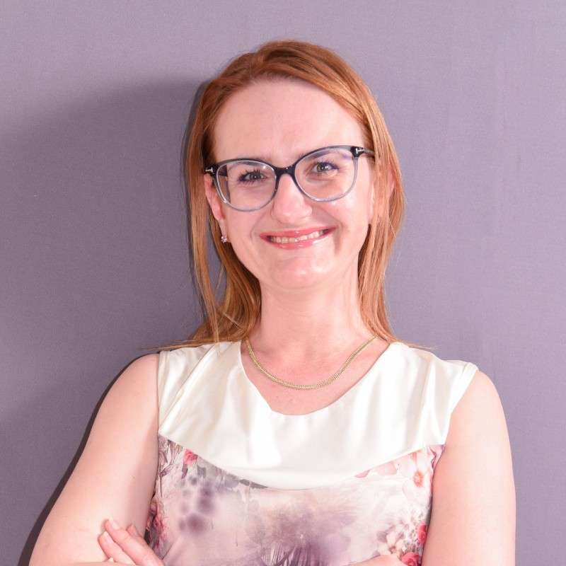
"Excellent software developer having deep knowledge in mathematics and algorithms. His work consistently exceeds expectations and demonstrates technical excellence."